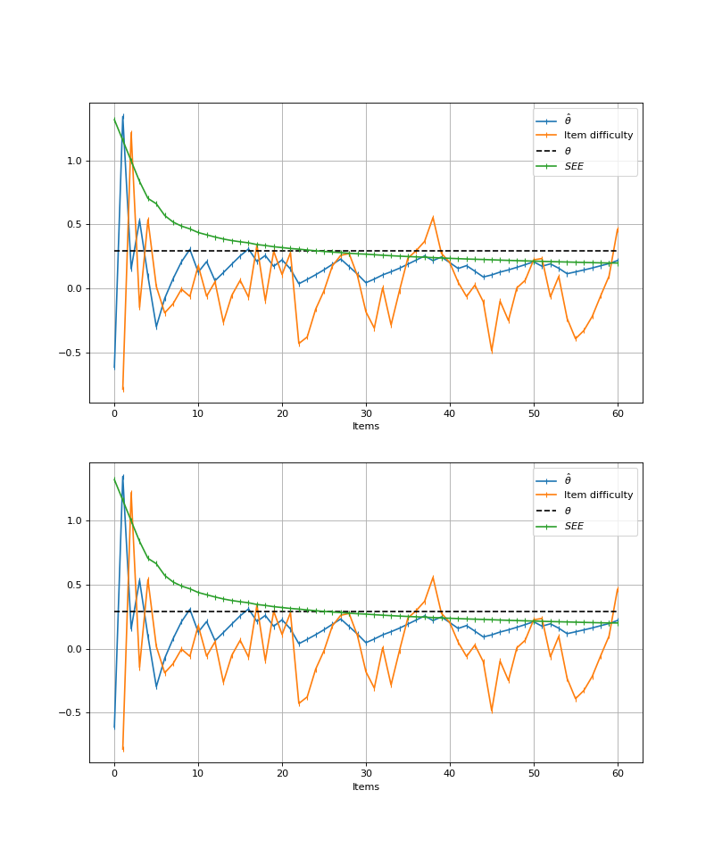

Reproducibility#
New in catsim 0.18.0!
Objects that use random number generation directly, mainly initializers and selectors, can have reproducible outputs by receiving a numpy.random.Generator instance in the rng keyword argument of their main method.
In the snippet below, all selectors that have random behavior produce the same outputs, when given the same input arguments.
from catsim import ItemBank
from catsim.selection import RandomesqueSelector, RandomSelector, The54321Selector
from numpy.random import default_rng
for _ in range(5):
item_bank = ItemBank.generate_item_bank(5000, seed=42)
print(
RandomSelector().select(item_bank=item_bank, administered_items=[], rng=default_rng(42)),
The54321Selector(test_size=10).select(
item_bank=item_bank, administered_items=[], rng=default_rng(42), est_theta=0
),
RandomesqueSelector(bin_size=10).select(
item_bank=item_bank, administered_items=[], rng=default_rng(42), est_theta=0
),
)
Simulations can also be entirely reproduced by passing a seed to a catsim.simulation.SimulationRunner object, which instantiates a numpy.random.Generator and carries it through the run context used by the CAT engine.
import matplotlib.pyplot as plt
from catsim import ItemBank
from catsim.estimation import NumericalSearchEstimator
from catsim.initialization import RandomInitializer
from catsim.plot import test_progress
from catsim.selection import MaxInfoSelector
from catsim.simulation import SimulationRunner
from catsim.stopping import MinErrorStopper
figure, axes = plt.subplots(2, 1, figsize=(10, 12))
for ax in axes:
item_bank = ItemBank.generate_item_bank(5000, seed=42)
runner = SimulationRunner(
item_bank,
RandomInitializer(),
MaxInfoSelector(),
NumericalSearchEstimator(),
MinErrorStopper(0.2),
seed=42,
)
result = runner.run(1)
test_progress(ax=ax, simulation=result, index=0, see=True, marker="|")
(Source code, png, hires.png, pdf)
{kind=link}
{kind=link}

Fig. 9 Generating a reproducible CAT simulation using seeds.#